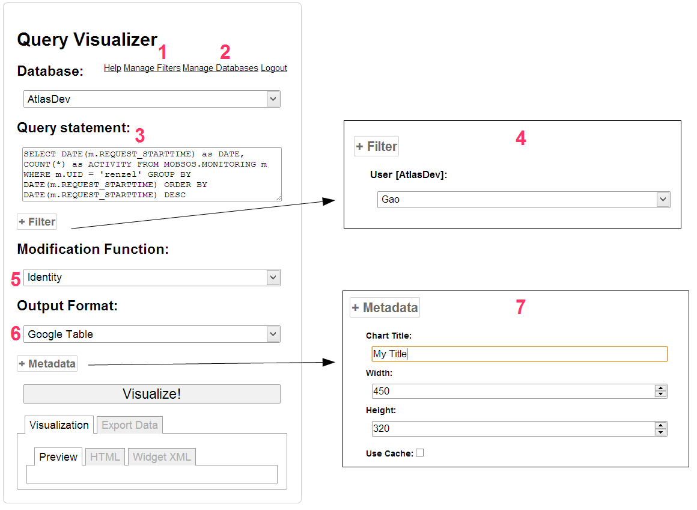
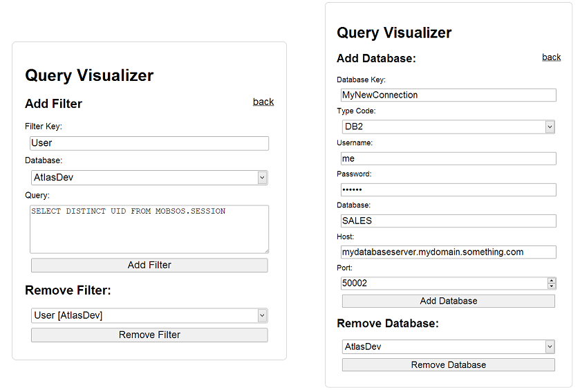
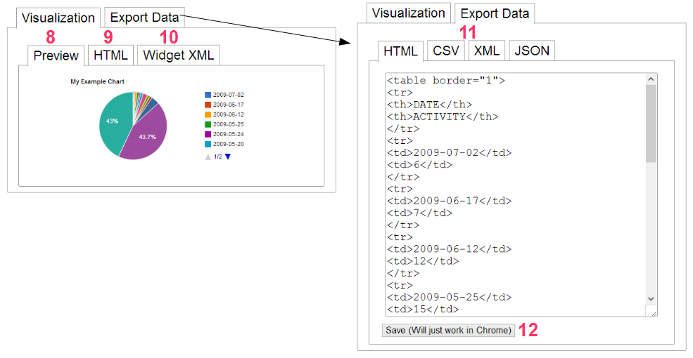

The Query Visualizer is a tool that gives a user the ability to create and visualize database queries in various ways. It also provides export options of a query result in various formats. The third function is the storing of a query to visualize it without having to log on everytime. Then the query and its visualization parameters are stored in LAS2peer. The user can easily embed a query visualization into his website by just adding three lines of codes to it.


The left screenshot shows the creation of the sample filter 'User'. A filter is basically just a query that is saved. You have to specify a name, a database and the query. By clicking on 'Add Filter' it is saved.
The right screenshot shows how to add a new database. The key is used to identifiy the database in the service.
This can be read as a step by step walkthrough to formulate, visualize and export a query.
After having selected the database the user wants to query, the user has to use SQL-Syntax to formulate his query.
By clicking the filter button, a list of availible filters and their values as a dropdown list will be shown. The corresponding database of the filter is written in brackets. A user can make use of a filter by inserting $FilterName$ into his query. When visualizing (or exporting) the query, this will then be replaced by the value that is currently selected in the dropdown list. If the query is stored, the filter values are inserted into the stored query (meaning that the stored query does not contain any filter information but the data that was chosen while saving the query). The filter's database does not have to be the same as the query's database. Of course it is possible to use several filters (or a filter twice) in one query.
The dropdown list shows the different modification functions that can be used to manipulate the query result. If no modification is desired, the modification 'Identity' should be used. Currently, the availiable modifications are:
The dropdown list shows the availiable output formats. If no visualization is desired (for example if a user only wants to export the resulting data) the visualization 'Google Table' should be used, since this can be used to display every result and also to sort the columns quickly. Currently, the availiable visualizations are:
By clicking the metadata button, four metadata parameters will be shown. These parameters will be stored alongside with the query and will be used when visualizing it afterwards. If the 'Use Cache' option is checked, everytime the stored query is executed, the service will look for a cached result and if availiable, use this. Currently, the time a result remains in cache is set to 90 minutes. This option does not effect the preview visualization.

After clicking on 'Visualize!' the result of the query is visualized as predefined by the user in the 'Preview'-section.
This does save the query. A HTML-Code will be generated that can be implemented in any website. It visualizes the query in the predefined way. This does NOT visualize a saved dataset but does query the database each time it is called, meaning that this will fail if the queried database is not availiable (and result is not cached / no cache is used).
Does integrate the result of (9) into a widget.
Currently, the availiable visualizations are:
By clicking this button, a file download will be triggered that contains the data in the desired export format.